Modbus & Power Meter
Modbus คือ "ภาษาต่างชาติ" ที่อุปกรณ์อุตสาหกรรมทุกยี่ห้อพูดได้ — บทนี้พาเข้าใจ Function Code, Address Map, แล้วลองให้ FX5U คุย กับ Power Meter Schneider PM2230 เพื่ออ่านค่า kWh, V, A, PF
Modbus 101
Modbus คือ Protocol แบบ Master-Slave ที่เกิดจาก Modicon ตั้งแต่ปี 1979 และยังใช้กันถึงทุกวันนี้ เพราะมัน เรียบง่ายและเปิด
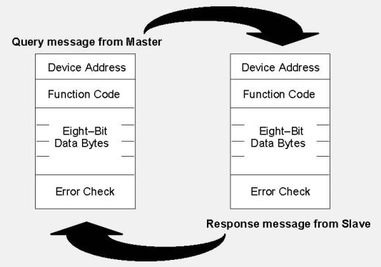
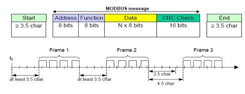
Master · FX5U
RS-485 RTU
- ส่ง Request
- รอ Response
- Timeout → Error
- Done → Read data
Slave #1 — DTK4848
Delta Temp Controller
Slave #2 — ATV320
Schneider VFD
Slave #3 — PM2230
Schneider Power Meter
Modbus มี 2 ภาษา
| Modbus RTU | Modbus TCP | |
|---|---|---|
| Physical | RS-485 / RS-232 | Ethernet |
| Frame | Binary + CRC-16 | MBAP header + Binary (ไม่มี CRC) |
| Speed | 9.6–115.2 kbps | 100 Mbps+ |
| ระยะ | ~1 กม. (RS-485) | ~100 ม. (Cat-5e) |
| เหมาะกับ | อุปกรณ์ภาคสนาม, sensor, drive | ระหว่าง PLC, HMI, SCADA |
📡 ลองสร้าง Modbus Frame เอง
เลือก Slave, Function Code, Register Address, และค่า — เครื่องมือจะคำนวณ CRC-16 ให้อัตโนมัติและแสดง frame byte-by-byte
ลองเปลี่ยน FC ดู — request frame เปลี่ยนหน้าตาทันที. Frame ที่เห็นนี่คือสิ่งที่จะออกสาย RS-485 จริง ๆ:
Function Codes ที่ใช้บ่อย
| FC | ชื่อ | ใช้กับ |
|---|---|---|
0x01 | Read Coils | อ่าน Bit จาก Slave (สถานะ Output) |
0x02 | Read Discrete Inputs | อ่าน Bit Input |
0x03 | Read Holding Registers | อ่าน Word (ค่าที่อ่านได้ส่วนใหญ่อยู่นี่) |
0x04 | Read Input Registers | อ่าน Word (Read-only) |
0x05 | Write Single Coil | เขียน Bit 1 ตัว |
0x06 | Write Single Register | เขียน Word 1 ตัว |
0x10 | Write Multiple Registers | เขียน Word หลายตัว |
0x03 และเขียนค่าด้วย 0x06 — ทำงานได้กับ Slave เกือบทุกตัวในตลาด
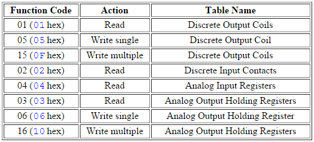
ตั้งค่า FX5U เป็น Modbus Master
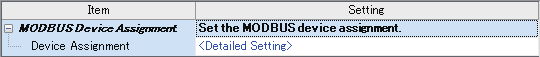
485 Serial Port → Communication Protocol Type ใน GX Works3 — เลือก MODBUS_RTU Communication, Parity None, Stop 1bit, Baud 115,200 (หรือ 9600 ตามที่ Slave รองรับ)-
เปิดพอร์ต RS-485
ใน GX Works3 →
Parameter → Module Parameter → 485 Serial Port→ ตั้ง:- Communication Protocol: MODBUS RTU Communication
- Baud rate:
9600· Data length:8· Parity:None· Stop bit:1 - Sum check: None (Modbus CRC อยู่ใน Frame อยู่แล้ว)
- Station No. ของ FX5U: ไม่สำคัญ — เป็น Master
-
Download Parameter
Online → Write to PLC→ ติ๊ก Parameter → Execute -
ต่อสาย RS-485
เชื่อม
SDA(FX5U) ↔D+(PM2230),SDB↔D−,SG↔GND
ปลายสาย Daisy-chain ต้องใส่ Terminating Resistor 120Ω
คำสั่ง ADPRW — ที่ใช้กับ Modbus RTU บน FX5U
คำสั่งหลักของ FX5U สำหรับ Modbus RTU ชื่อ ADPRW (Adapter Read/Write)
ADPRW s1 s2 s3 s4 s5/d
s1 = Slave Station No. (1–247)
s2 = Function Code (H03, H06, ฯลฯ)
s3 = Slave Register Start Address
s4 = Number of Registers to read/write
s5/d = Local D-register start (where data goes / comes from)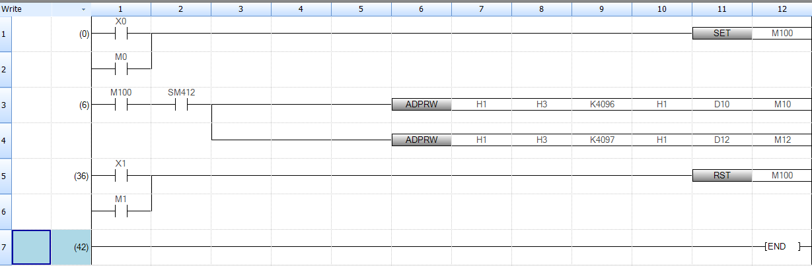
ADPRW H1 H3 K4096 H1 D10 อ่านค่าจาก Slave 1 (FC=03) เข้า D10ตัวอย่าง — อ่าน 6 register จาก Slave 3 (PM2230)
ก่อนเขียน Ladder ดูคู่มือว่า Slave สนับสนุนอะไรบ้าง — ตัวอย่าง register map ของ Delta DTK:
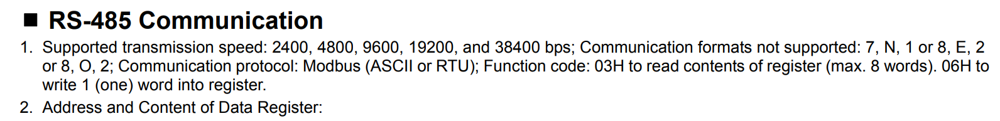
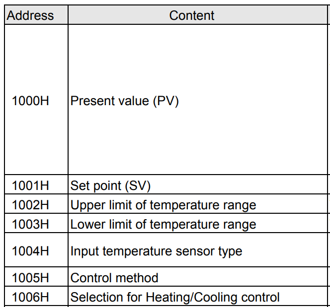
1000H = PV, 1001H = SP, 1002H/1003H = ช่วง T, 1004H = Sensor type, 1005H/1006H = control method; Trigger ทุก 1 วินาทีด้วย M8013 (special internal — 1 Hz clock)
LD M8013
ADPRW K3 H03 K2999 K6 D100
; ความหมาย:
; - Slave 3 (PM2230 ตั้ง station ID = 3)
; - Function Code 03 = Read Holding Registers
; - Start address = 2999 (offset อยู่ใน datasheet ของ PM2230 — ดู Module 7)
; - Read 6 registers
; - เก็บที่ D100..D105Schneider PM2230 — Power Meter
PM2230 อ่าน Volt / Amp / Power Factor / kWh ของระบบไฟ 3 phase ได้ทั้งหมด และส่งผ่าน Modbus RTU ไปยัง PLC ได้โดยตรง
Address Map ที่ใช้บ่อย
| Register | ค่า | Data Type | หน่วย |
|---|---|---|---|
2999 | Current — Phase A | Float32 (2 regs) | A |
3001 | Current — Phase B | Float32 | A |
3003 | Current — Phase C | Float32 | A |
3019 | Voltage L1-N | Float32 | V |
3021 | Voltage L2-N | Float32 | V |
3023 | Voltage L3-N | Float32 | V |
3053 | Active Power — Total | Float32 | kW |
3083 | Power Factor — Total | Float32 | — |
3203 | Energy Active Delivered | Int64 (4 regs) | Wh |
หมายเหตุ: address ของ PM2230 ใช้แบบ 0-indexed ตามมาตรฐาน Modbus แต่บางคู่มือเขียน address แบบ "1-indexed" ทำให้สับสน — ดู Register List ฉบับสมบูรณ์ที่ หน้าเอกสารอ้างอิง
EBIN (Extended BIN) หรือ EMOV เพื่อแปลงเป็น Real ใน PLC
การแปลง Float32 จาก 2 Word
; D100, D101 = 2 word ที่อ่านมาจาก PM2230
; ต้องการเก็บเป็น Real (32-bit Float) ที่ D200
LD M8000 ; Always ON
EMOV D100 D200 ; ก็อป 2 word เป็น 1 ค่า Real
; ตอนนี้ D200 = Voltage จริง (เช่น 220.5 V)
; แสดงผลผ่าน HMI: link Numeric Display ของ HMI ไปที่ D200 (Data Type = Float)🔢 Float32 ↔ Register — Interactive Converter
ลองดูว่า 220.5 V หน้าตาเป็น register อย่างไร, หรือเอา register hex ที่อ่านได้จาก Modbus มาลองแปลงกลับเป็นค่าจริง — ปัญหาคือ Word Order ของแต่ละยี่ห้อไม่เหมือนกัน (PM2230 ใช้ AB CD · Schneider VFD ใช้ CD AB)
ตั้งค่า PM2230
- กดปุ่ม Menu ค้างที่ตัว PM2230 — เข้า Configuration Menu
-
ตั้ง Communication
เข้า
Communications→ ตั้ง:- Protocol: Modbus
- Address: 3
- Baud rate: 9600
- Parity: None
- บันทึก + Restart กด Save → ดับ PM2230 → เปิดใหม่ → ตอนนี้เป็น Modbus Slave #3 พร้อมตอบสนอง
📟 ลองเดินเมนู PM2230 ก่อนของจริง
เพราะ PM2230 มี Sub-menu ซ้อนกันหลายชั้น คนเริ่มต้นมักหลงทาง — ลองเล่นกับเครื่องจำลองด้านล่างก่อน
เพื่อจำเส้นทาง · เป้าหมาย: เข้าหา CoM แล้วเซ็ต Adr=3, bAUd=9600, Par=NonE
- จากหน้า Normal (V/A/kW อ่านได้) → กด
OKค้างจะเข้า Setup - เครื่องจริงจะถาม Password (default =
0000— ถ้ายังไม่เคยตั้ง) - หลังเปลี่ยน
Adr/bAUd/Parต้อง ดับไฟแล้วเปิดใหม่ ค่าใหม่ถึงจะมีผล - ถ้ากด
Menuโดยไม่บันทึก — ค่ายังอยู่ในหน่วยความจำชั่วคราว · กลับเข้า Setup ดูได้ว่าค่าใหม่หรือเก่า
ตัวอย่างใช้งานจริง — สร้าง Energy Dashboard
โปรเจกต์ปิดท้ายคู่มือ — สร้างระบบที่ HMI แสดง V, A, kW, kWh real-time จาก PM2230 และส่งสัญญาณ Alarm ถ้ากำลังเกิน 5 kW
-
FX5U poll PM2230 ทุก 1 วินาที
ใช้
ADPRW K3 H03 ...อ่าน V, I, P ทีละ block เก็บที่ D100–D120 -
แปลง Float32 → Real
ใช้
EMOVสำหรับแต่ละค่า → เก็บ Real ที่ D200, D202, D204... - ส่งให้ HMI Samkoon ใน HMI link Numeric Display ไปที่ D200 (V), D202 (I), D204 (kW), D206 (PF) Data Type = Float 32-bit ทุกตัว
-
Set Alarm ที่ FX5U
; ถ้า kW > 5.0 → Bit M20 = ON → HMI ขึ้น Popup LD M8000 EMOVR D204 D210 ; เปรียบเทียบ Real ECMP K5000 D204 M20 ; M20+0,+1,+2 = <,=,> result ; M22 = ON เมื่อ D204 > 5.0 - วาด Trend Graph บน HMI ใช้ Element "Trend Curve" → link ไปที่ D204 → สุ่มสีและช่วงเวลาตามต้องการ
Modbus TCP — ถ้าใช้ Ethernet
FX5U ทำ Modbus TCP ได้เช่นกันผ่านพอร์ต Ethernet ในตัว — ใช้ SLMP
หรือ Function Block MBM_ จาก Library
ข้อดี: ความเร็วสูงกว่า · ระยะใกล้แต่เร็ว · ใช้สาย LAN ที่หาง่ายและถูกกว่า RS-485
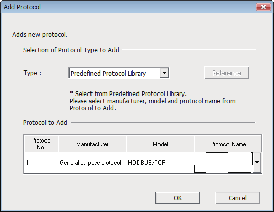
Add Protocol → Predefined Protocol Library → General-purpose protocol → MODBUS/TCP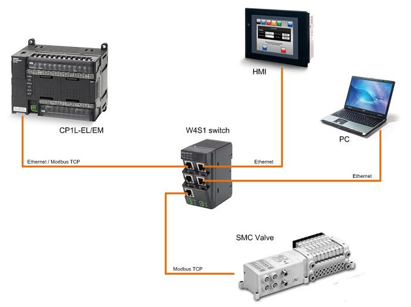
การ Map PLC Device → Modbus Address (FX5U เป็น Slave)
ถ้าจะให้ FX5U เป็น Slave (ไม่ใช่ Master) — กำหนดได้ว่า Modbus Address ไหนแมพไปกับ Device PLC ไหน:
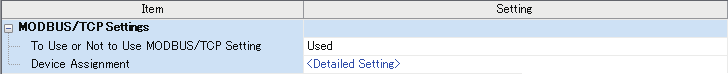
MODBUS Device Allocation Parameter — Allocation 1 mapping Y0..Y1023 = Modbus Coil 0–1023, X0..X1023 = Discrete Input, D0..D7999 = Holding RegisterBonus — Analog Input ของ FX5U เอง
FX5U มี Analog Input 2 ช่อง built-in — อ่านค่าได้โดยไม่ต้องใช้ Modbus เลย ค่าจะอยู่ใน Special Data register (SD):
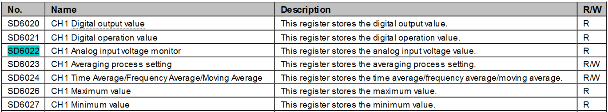
SD6020 = Digital output, SD6022 = Analog input voltage monitor, SD6026/SD6027 = Max/Min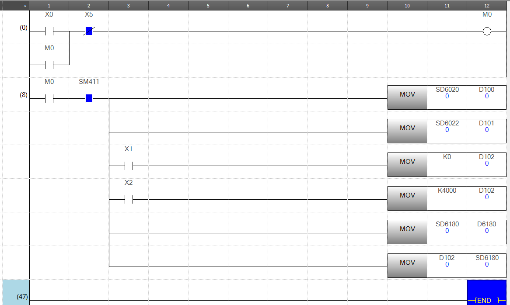
MOV SD6020 → D100 ก็อปค่า Digital, MOV SD6022 → D101 ก็อปแรงดัน, ใช้ X1/X2 เลือกค่าสเกล (K0 หรือ K4000)เอกสาร Modbus
🎉 จบคู่มือ
ถ้าทำมาถึงตรงนี้ได้ คุณมี ทักษะ PLC Automation ครบเซต:
- ✓ เขียน Ladder + FBD บน Mitsubishi และ Omron
- ✓ ต่อ Sensor และ Output ได้เอง
- ✓ Simulate ก่อน Deploy เพื่อ Debug
- ✓ ออกแบบ HMI ติดต่อกับ Operator
- ✓ จูน PID ด้วย Ziegler-Nichols + Auto-Tune
- ✓ คุย Modbus กับอุปกรณ์อุตสาหกรรมหลายยี่ห้อ
ทักษะเหล่านี้คือ พื้นฐาน Industrial Automation ที่ใช้ได้กับทุกโรงงานในประเทศไทย — ลองหาโจทย์จริงในเครื่องจักรรอบตัว แล้วนำสิ่งที่เรียนมาประยุกต์ดู